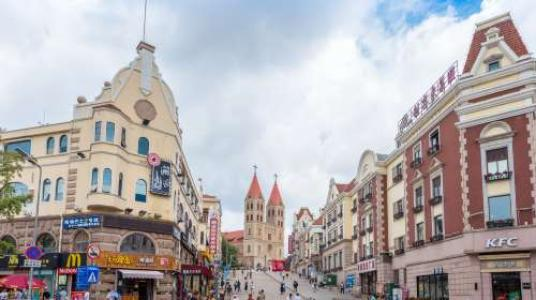
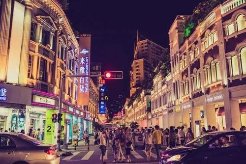
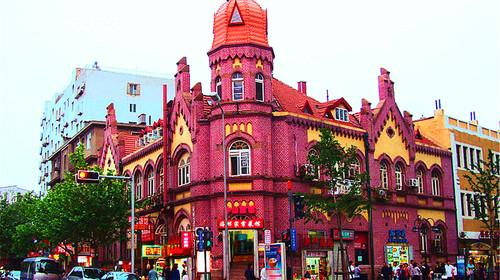
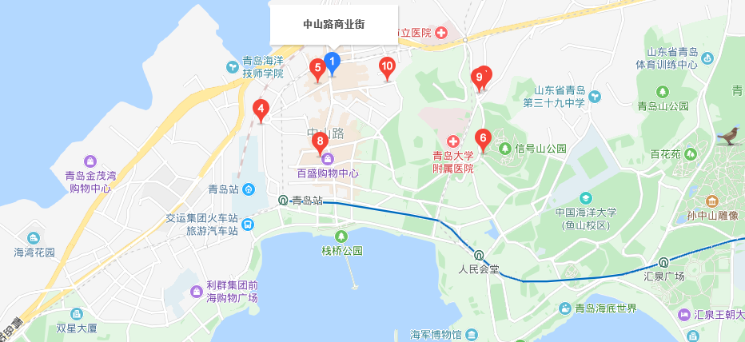

中山路商业街
时间：2019/11/11

【简介】 | ||
|---|---|---|
|  |  | |
|
中山路南接栈桥，北接大窑沟，长约1500米，创始于1897年德国占领时期。原分为两段，南段是栈桥至德县路，名斐迭里街，属德国等欧美侨民居住地，史称“青岛区”，也叫“欧人区”；北段自德县路至大窑沟，属国人居住的“鲍岛区”，也称“华人区”，俗称大马路。 1914年开始，日本取代德国对青岛进行了8年的殖民统治，这条路改名为静冈町，至今还留下了日本商号的一些遗迹。1922年中国收回青岛，则更名为山东路。1929年5月22日为纪念孙中山先生，改名为中山路。中山路是曾经与上海的南京路、北京的王府井齐名的老青岛有名的商业中心。 这里有着许多知名的百年老店，如“盛锡福”鞋帽店、香满四溢的“春和楼”、家喻户晓的“宏仁堂”大药房、百年老店“福生德”茶庄，当然还有名冠中华的“亨德利”钟表店。在这条街上出售干海产品的商家随处可见，既有海参、鲍鱼、鱼翅等海珍品，也有大虾、海米、鱿鱼、蛤蜊、烤鱼、烤虾、虾皮、海带等中低档海产品。 |
中山路是青岛市“名片”，长1500米，堪称青岛的“母脉”。青岛中山路自1960年起通行无轨电车（1960年前只有2路，1964年增加5路，共两条线路，双向），但受1997年，青岛市人民政府、市南区人民政府为打造中山路为“城市名片”，对其进行美化、亮化工程的影响，拆除了中山路绝大部分电车接触网（兰山路至天津路）， 2路、5路都改行河南路、天津路（东向）、北京路（西向）。目前仅天津路至胶州路及胶州路至北京路（还有为应对北京路封闭施工而延长至大窑沟济南路的一段，现已废弃）两段南向北方向通行无轨电车。入夜，迎着徐徐的海风，再看今日的中山路，“亮化工程”的片片霓虹已将中山路燃化成光明缤纷的川流。 远近闻名的青岛中心商业街——中山路，贯通南北，起伏蜿蜒，如同一条历史川流，在老青岛人的心上已流淌了百年。瞩目今日繁华洁净的商业街，回首百年的中山路，沧桑巨变，令人惊叹。 |
|
【历史沿革】
中山路在前五十年走过的足迹中，落满了旧时代的历史尘埃。德国占领青岛后，一度将中山路划成欧人、华人两个区域，以保定路、德县路路口为界（当年的界石现存于青岛山炮台展览馆），南部是欧人居区，北部是华人居区，南段的路面比北段宽出六米。 由于居区的分别，中山路的商业格局就形成了洋行与华人店铺分据南北的局式。青岛解放前夕，中山路的店铺仍残存着这种旧的斑痕。三、四十年代，随着青岛城市规模的扩展，以中山路为轴线的青岛中心商区已经形成，中山路上银行、商店、饭店以及影剧院鳞次栉比， 包括中山路附近的河南路、天津路、北京路、海泊路、潍县路，商店、饭店、旅店也比比皆是。这片中心商业区就是几代青岛人亲切地称做"街里"的地方，“逛街里”是当年青岛人时尚的消闲方式。旧中国的五十年中，“逛街里”的青岛人不仅用消费娱悦了自己， 而且怀着朴素的爱国之情，用老青岛们的消费造就和支撑了一批至今仍然林立在中山路上的华商老字号，诸如：福禄寿、春和楼、宏仁堂、盛锡福以及那爿字号鲜明的青岛国货公司。当年的“国货”二字在中国人的心中是何等的回肠荡气。 1949年6月2日，青岛回到了人民的怀抱，走过五十年风雨的中山路洗刷了历史的尘垢，光彩亮丽，百业俱兴。改革开放后的十余年里，中山路上现代商厦拔地而起，老字号们风韵犹存，“逛街里”的青岛人也不再满足到“谦祥益”扯几尺洋布，到“劈柴院”吃碗面条，而是进则时装店，入“肯德基”。 洋荤已不仅是洋人的了。
【交通信息】
6路; 8路; 221路; 228路; 231路环线; 308路; 412路；305路；325路；301路；320路